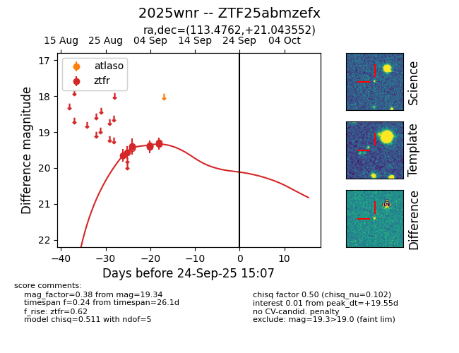
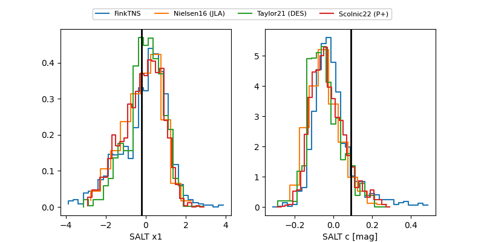

FINK: ZTF25abmzefx
Lasair: ZTF25abmzefx
ALeRCE: ZTF25abmzefx
TNS: 2025wnr
YSE: 2025wnr
ZTF25abmzefx (ztf,fink)
2025wnr (tns,yse)
equatorial (ra, dec) = (113.4762,+21.04355)
galactic (l, b) = (198.2021,+18.46755)


last ztfr=19.34
9 ztfr detections